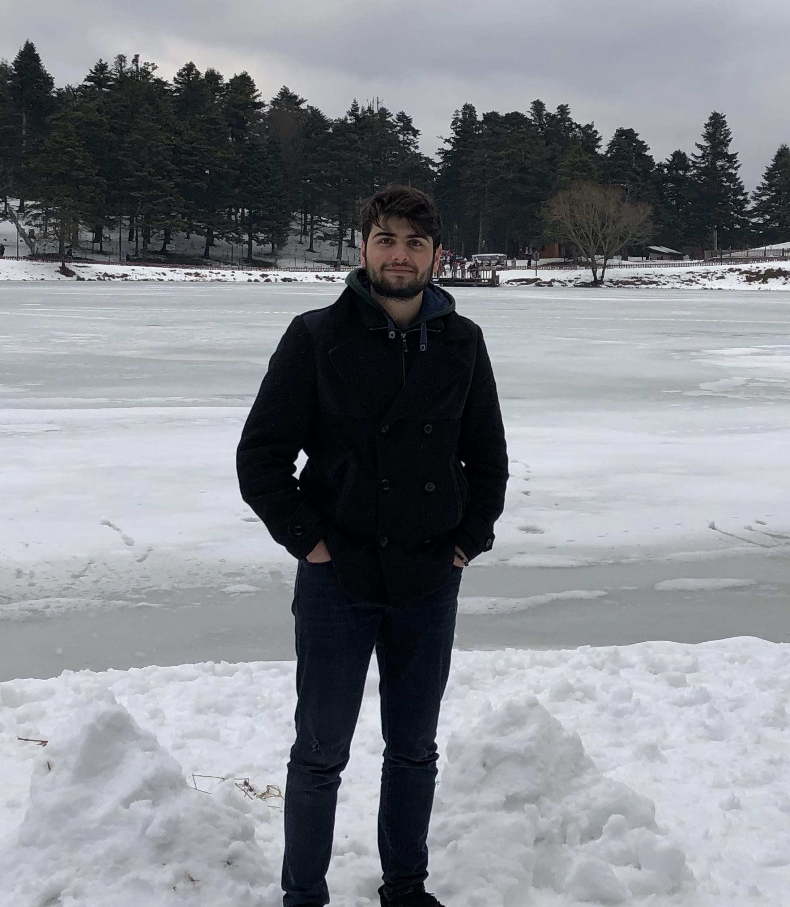

<!DOCTYPE html>

<html>
    <link rel="stylesheet" href="https://stackpath.bootstrapcdn.com/bootstrap/4.4.1/css/bootstrap.min.css" integrity="sha384-Vkoo8x4CGsO3+Hhxv8T/Q5PaXtkKtu6ug5TOeNV6gBiFeWPGFN9MuhOf23Q9Ifjh" crossorigin="anonymous">

    <script src="https://kit.fontawesome.com/d400023c88.js" crossorigin="anonymous"></script>
    
    <script src="https://code.jquery.com/jquery-3.4.1.slim.min.js" integrity="sha384-J6qa4849blE2+poT4WnyKhv5vZF5SrPo0iEjwBvKU7imGFAV0wwj1yYfoRSJoZ+n" crossorigin="anonymous"></script>
    <script src="https://cdn.jsdelivr.net/npm/popper.js@1.16.0/dist/umd/popper.min.js" integrity="sha384-Q6E9RHvbIyZFJoft+2mJbHaEWldlvI9IOYy5n3zV9zzTtmI3UksdQRVvoxMfooAo" crossorigin="anonymous"></script>
    <script src="https://stackpath.bootstrapcdn.com/bootstrap/4.4.1/js/bootstrap.min.js" integrity="sha384-wfSDF2E50Y2D1uUdj0O3uMBJnjuUD4Ih7YwaYd1iqfktj0Uod8GCExl3Og8ifwB6" crossorigin="anonymous"></script>


<meta charset="UTF-8">
<meta name="viewport" content="width=device-width, initial-scale=1">
<title>Yusuf Sönmez</title>

<link rel="stylesheet" href="CSS/proje_hakkinda.css">
<script src="https://kit.fontawesome.com/d400023c88.js" crossorigin="anonymous"></script>

</html>

<body>
    <div class="logo">
        <i class="fas fa-balance-scale"></i>
    </div>
    <header>  
        <div class="nav-bar">

            <nav class="navbar navbar-expand-lg navbar-light bg-light">
                <a class="navbar-brand" href="#">Sonmez</a>
                <button class="navbar-toggler" type="button" data-toggle="collapse" data-target="#navbarSupportedContent" aria-controls="navbarSupportedContent" aria-expanded="false" aria-label="Toggle navigation">
                  <span class="navbar-toggler-icon"></span>
                </button>
              
                <div class="collapse navbar-collapse" id="navbarSupportedContent">
                  <ul class="navbar-nav mr-auto">
                    <li class="nav-item active">
                      <a class="nav-link" href="proje_hakkinda.html">Hakkımda <span class="sr-only">(current)</span></a>
                    </li>
                    <li class="nav-item">
                      <a class="nav-link" href="proje_ozgecmis.html">Özgeçmiş</a>
                    </li>
                    <li class="nav-item">
                        <a class="nav-link" href="proje_sehrim.html">Şehrim</a>
                      </li>
                      <li class="nav-item">
                        <a class="nav-link" href="#">Mirasımız</a>
                      </li>
                      <li class="nav-item">
                        <a class="nav-link" href="">İletişim</a>
                      </li>
                      <li class="nav-item">
                        <a class="nav-link" href="proje_login.html">Login</a>
                      </li>
                    
                  </ul>
                </div>
              </nav>

        </div>
        
    </header>

    <div class="yazi">
        <h1>Merhaba,</h1>
        <a href="https://www.tripadvisor.com.tr/Attraction_Review-g609054-d12688896-Reviews-Golcuk_Tabiat_Parki-Bolu_Bolu_Province_Turkish_Black_Sea_Coast.html"></a>
        <p>
             Öncelikle  sayfama Hoşgeldiniz. Ben Yusuf Sönmez. Sakarya Üniversitesi Bilgisayar Mühendisliği bölümü öğrencisiyim.
            2000 yılında Elazığ'da dünyaya geldim. Ancak doğduğum yerde değil, babamın memleketi olan Sakarya'da büyüdüm.
            Kendimi Elazığ'dan çok Sakarya'ya ait hissediyorum diyebilirim.
            
        </p>
        <p>
            En çok keyif aldığım aktivite kitap okumak. Kitap okumanın zaman yolculuğunu az da olsa mümkün hale getirdiğini
            düşünüyorum. Çünkü eski devirlerde yaşamasak da yaşamış olanların yazdıklarıyla o dönemi anlamlandırabiliyoruz.
        </p>

        <p>
            Kamp yapmak ve seyahat etmek de ayrıca keyif aldığım aktiviteler arasında. Doğayla iç içe vakit geçirmek şehrin
            yoğun atmosferinden kaçamak yapmamı sağlıyor. Seyahat etmenin en sevdiğim kısımları ise yeni insanlarla tanışıyor,
            ve yeni yerler keşfediyor olmak. Tabi bunları yanımda arkadaşlarımla yapıyorsam ayrı bir keyif almıyor değilim.
            <a href="https://www.kulturportali.gov.tr/turkiye/sakarya/gezilecekyer/cigdem-yaylasi">
                
            </a>
        </p>
        
    </div>
    <footer>
        <table>
            <tr>
                <td class="Policies">
                    Tüm Hakları Saklıdır
                </td>
                <td class="social_media">
                    <ul>
                        <li><a href="#"><i class="fab fa-facebook-square"></i></a></li>
                        <li><a href="#"><i class="fab fa-twitter-square"></i></a></li>
                        <li><a href="#"><li><i class="fab fa-linkedin"></i></li></a></li>
                    </ul>
                </td>
                <td class="Inf">
                    Made By Sonmez
                </td>
            </tr>
        </table>
    </footer>
</body>